1. Module summary
The first screen a guest sees. It answers "where should I stay and what can I do in Dahab?" by combining: a search bar (zone, stay/activity type, dates, guests), live sea conditions, a zone selector (Lighthouse, Mashraba, Assalah, Blue Hole & Ras Abu Galum), category pills, a "Popular in
2. Business requirements covered (SRS)
| ID | Requirement | Priority | MVP | Where in the design |
|---|---|---|---|---|
| FR-2.1 | Search properties by zone, dates, guest count, price range, property type, amenities | High | MVP ✓ | Search bar + Filter panel |
| FR-2.2 | Search activities by zone, category, date, price range | High | MVP ✓ | "Expedition & Stay" selector + category pills |
| FR-2.4 | Browse guide content: zones, POIs, articles | High | MVP ✓ | Zone selector, "Curated Sinai Stories" |
| FR-2.5 | View properties/activities/POIs on a map | High | MVP ✓ | "Map View" / "Interactive Nautical Chart" / "Interactive Map" entry points |
| FR-2.6 | Filter/sort by rating, price, distance, popularity | Medium | MVP ✓ | Filter panel (price, zone, type, amenities) |
| FR-7.1 | Save properties/activities to favourites | Medium | MVP ✓ | Heart icon on listing cards (design-system card) |
| FR-11.2 | "Popular in this zone" / "similar to what you viewed" for new users | Medium | MVP ✓ | "Popular in Lighthouse Bay" strip |
| FR-20.1/20.2 | EN + AR UI; switch language any time | High | MVP ✓ | EN | عربي toggle in header; Arabic hero subtitle |
3. Screen inventory
| # | State | Breakpoints in Figma |
|---|---|---|
| 4.1 | Default | All 4 |
| 4.2 | Filter panel open | Desktop (1), Tablet (2 variants), Mobile Web (3 variants), Native (3 variants) — team must pick one variant per breakpoint |
| 4.3 | Empty search results | All 4 |
4. Screen specifications
4.1 Discovery Home — Default
Entry: app launch, logo click, Explore tab (native/mobile). Exits: Search Results, Listing Detail, Zone Overview, Guide Article, Map View, Filter panel.
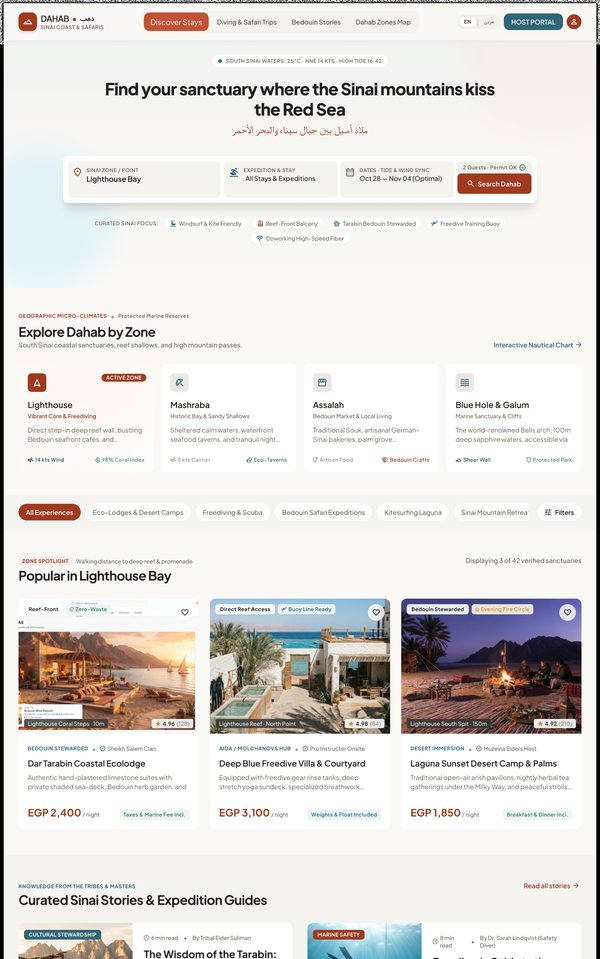
Open in Figma · 16:9383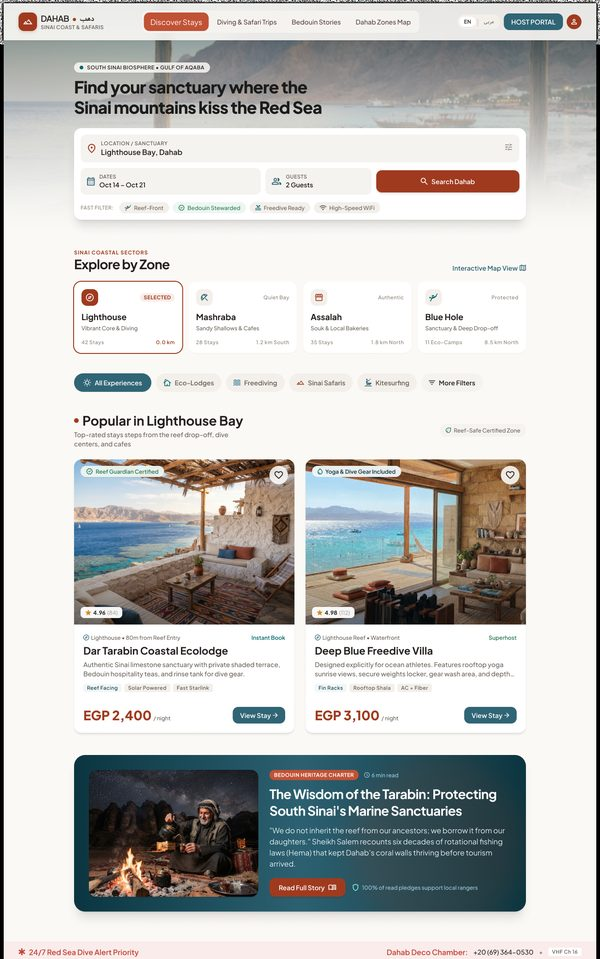
Open in Figma · 16:7849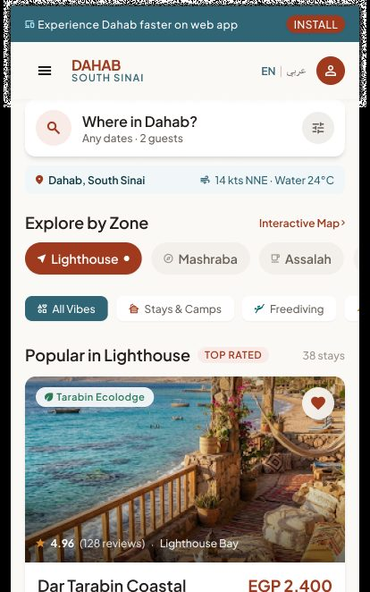
Open in Figma · 16:6555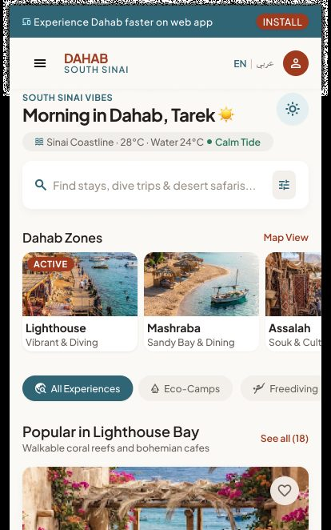
Open in Figma · 16:5163Page sections (top → bottom, Desktop; other breakpoints follow the same order)
| # | Section | Content (from Figma) | Behaviour / rule |
|---|---|---|---|
| 1 | Header | Logo, Discover Stays, Diving & Safari Trips, Bedouin Stories, Dahab Zones Map, EN | عربي, HOST PORTAL, profile | Standard shell (see module 01). |
| 2 | Live sea-conditions strip | "SOUTH SINAI WATERS: 25°C · NNE 14 KTS · HIGH TIDE 16:42" (native: "Sinai Coastline · 28°C · Water 24°C · Calm Tide") | Read-only; refreshed periodically from a marine/weather data source (source not in SRS — see §7). |
| 3 | Hero | "Find your sanctuary where the Sinai mountains kiss the Red Sea" + Arabic line. Native: personalised "Morning in Dahab, Tarek ☀️" | Greeting uses first name if logged in, generic otherwise. |
| 4 | Search bar | Sinai zone / point (e.g. Lighthouse Bay) · Expedition & stay (All Stays & Expeditions) · Dates "Oct 28 — Nov 04 (Optimal)" · Guests "2 Guests" · button Search Dahab. Mobile: "Where in Dahab?" + "Any dates · 2 guests" pills. Native: single input "Find stays, dive trips & desert safaris…" | Submitting opens Search Results (module 03) with the chosen criteria. Dates optional; guests default 2. |
| 5 | Curated focus chips | Windsurf & Kite Friendly · Reef-Front Balcony · Tarabin Bedouin Stewarded · Freedive Training Buoy · Coworking High-Speed Fiber (Tablet: "Freedive Ready", "High-Speed WiFi") | Each chip = a pre-set filter; opens Search Results with that filter applied. |
| 6 | Zone selector "Explore Dahab by Zone" | Cards: Lighthouse (Vibrant Core & Freediving), Mashraba (Historic Bay & Sandy Shallows), Assalah (Bedouin Market & Local Living), Blue Hole & Galum (Marine Sanctuary & Cliffs); each with a short description, 2 stats (e.g. "14 kts Wind", "98% Coral Index"); Tablet adds stay count + distance ("42 Stays · 0.0 km"). Link "Interactive Nautical Chart" / "Interactive Map" | Selecting a zone makes it ACTIVE and re-loads the "Popular in |
| 7 | Category pills | All Experiences · Eco-Lodges & Desert Camps · Freediving & Scuba · Bedouin Safari Expeditions · Kitesurfing Laguna · Sinai Mountain Retreats · Coral Restoration Workshops · Filters | Single-select category filters the strip below; Filters opens the Filter panel (4.2). |
| 8 | "Popular in Lighthouse Bay" | Label ZONE SPOTLIGHT, sub "Walking distance to deep reef & promenade", "Displaying 3 of 42 verified sanctuaries". 3 listing cards: photo + badges (Reef-Front, Zero-Waste…), location & distance, rating (e.g. 4.96 (128)), host line ("BEDOUIN STEWARDED · Sheikh Salem Clan"), name, 1-line description, price "EGP 2,400 / night", inclusion note ("Taxes & Marine Fee Incl."). Native/Mobile: "Reserve" / "See all (18)" | Card → Property/Activity Detail (module 05). Heart → add to favourites (module 08; login required). "See all" → Search Results filtered by zone. Ranking = popularity in zone for users without history (FR-11.2). |
| 9 | Curated Sinai Stories | "KNOWLEDGE FROM THE TRIBES & MASTERS": article cards with category, read time, author, title, excerpt, "Read Stewardship Article / Read Safety Guide"; "Read all stories" | Opens Guide Article (module 04). |
| 10 | Emergency strip + footer | "24/7 Red Sea Dive Alert Priority — Dahab Deco Chamber +20 (69) 364-0530 · VHF Ch 16" | Phone number is a tel: link on mobile. |
| — | Native / Mobile Web bottom tab bar | Explore (active) · Saved · Bookings · Profile | Standard. |
Step-by-step — main flows
| # | Guest does | System does |
|---|---|---|
| 1 | Opens the app / site | Loads conditions strip, default zone (Lighthouse), popular listings for that zone, stories. |
| 2 | Picks another zone card | Marks it ACTIVE; refreshes "Popular in |
| 3 | Taps a category pill | Filters the strip to that category (stays vs expeditions). |
| 4 | Fills the search bar and taps Search Dahab | Opens Search Results (03) with zone, type, dates, guests. |
| 5 | Taps a curated focus chip | Opens Search Results with that attribute filter pre-applied. |
| 6 | Taps Filters | Opens the Filter panel (4.2) over the page. |
| 7 | Taps a listing card | Opens Listing Detail (05). |
| 8 | Taps the heart on a card | If logged in → saved (heart filled). If not → Login (01), then saved. |
| 9 | Taps a story | Opens Guide Article (04). |
| 10 | Taps Map / Interactive chart | Opens Map View (03). |
4.2 Filter panel open
Presentation per breakpoint: Desktop – full overlay panel with a live preview of matching stays; Tablet – side/centred modal; Mobile Web & Native – bottom sheet.
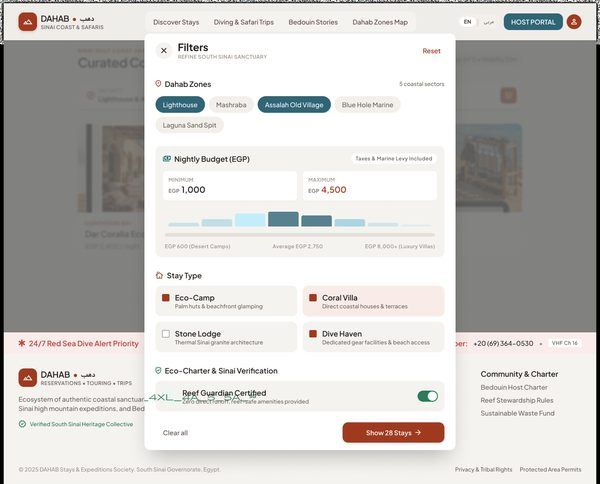
Open in Figma · 16:8645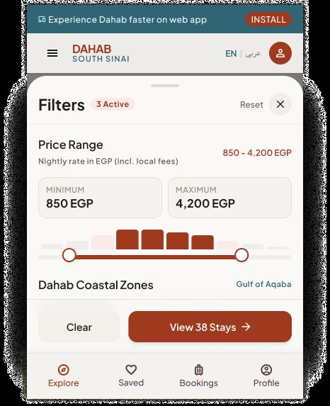
Open in Figma · 16:7125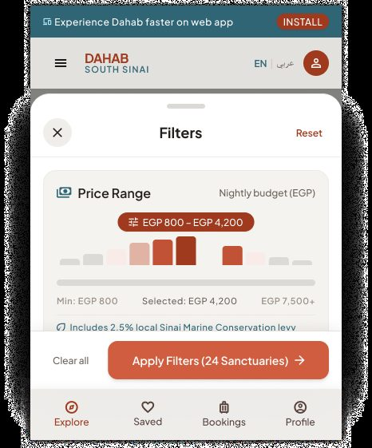
Open in Figma · 16:5648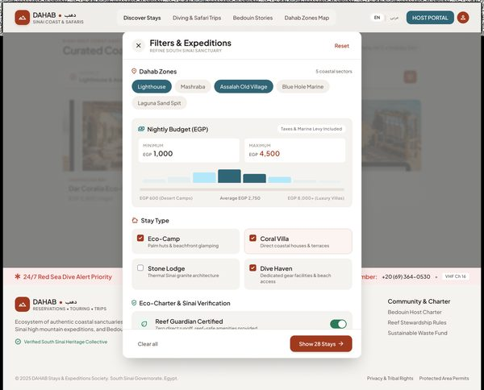
Open in Figma · 16:9027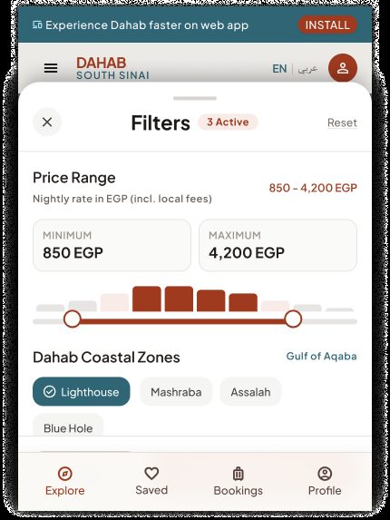
Open in Figma · 16:7360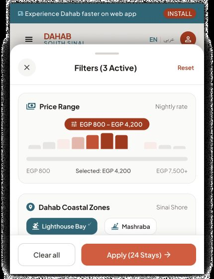
Open in Figma · 16:5983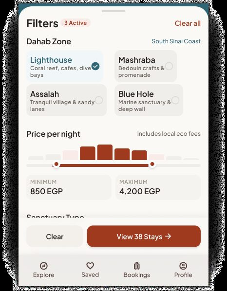
Open in Figma · 16:7586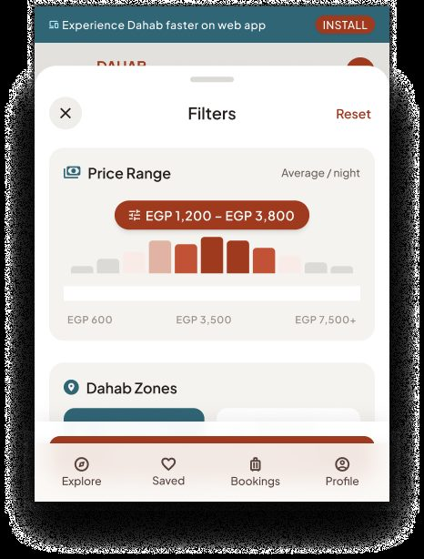
Open in Figma · 16:6248Filter groups (union of variants)
| Group | Control | Options / rule (from Figma) |
|---|---|---|
| Where / Zone | Chips, multi-select, with stay counts | All Dahab Coast (select all) · Lighthouse & Eel Garden · Mashraba · Assalah Souk & Palms · Laguna · Blue Hole & Abu Galum — e.g. "24 stays", "18 stays", "9 stays" |
| Dates & guests | Summary fields | "12 Oct – 19 Oct • 7 nights", "2 Guests • Dive gear" |
| Price per night (EGP) | Dual-thumb slider + Minimum / Maximum inputs, histogram | Range EGP 800 → 6,000+ (native variants: 800–7,500+, 600–3,500); shows average ("Average: EGP 2,850"); note "Includes local conservation & coastal tax" |
| Stay / sanctuary type | Multi-select tiles | Eco-lodge · Bedouin Camp · Beach Villa · Freediver Hostel · Boutique Riad (native variant C: Eco-Lodges · Coral Reef Villas · Desert Stargazer Camps) |
| Marine & reef stewardship | Toggles / checkboxes with host counts | Dahab Reef Guardian Certified · Plastic-Neutral Stay (31 hosts) · Solar & Off-Grid (19) · Dive Gear Rinse Tank (27) |
| Experience & activity amenities | Checkboxes | Direct Reef Drop-off · Freedive Buoy Rental · Starlink High-Speed · Bedouin Fire Dinners · Yoga Shala / Deck · Camel Transit to Stay |
| Host & Sinai culture | Checkboxes with counts | Tribal Accord (18) · Muzeina Clan Host (14) · Women-Led Sinai Collective (10) |
| Footer actions | Buttons | Clear all (3 active) / Reset · Show 42 Sanctuaries & Stays / Apply Filters (24 Sanctuaries) / View 38 Stays |
Step-by-step
| # | Guest does | System does |
|---|---|---|
| 1 | Taps Filters | Opens panel with current filters pre-selected; header shows active count ("Filters (3)"). |
| 2 | Changes any filter | Recalculates the result count live and updates the CTA label ("Show 42…"). Desktop also refreshes the preview cards. |
| 3 | Taps Clear all / Reset | Resets all groups to defaults; count updates. |
| 4 | Taps Show N / Apply | Closes the panel; results/strip reflect filters; active-filter chips appear. |
| 5 | Closes (✕, swipe down, tap outside) | Discards unapplied changes. |
Rule: if the live count would be 0, the CTA should read "No matches — adjust filters" and be disabled (not designed).
4.3 Empty search results
Trigger: a search/filter combination returns no available stays (Figma example: Ras Abu Galum, Nov 12–18, 4 guests, 2 rooms, Freedive Villa).
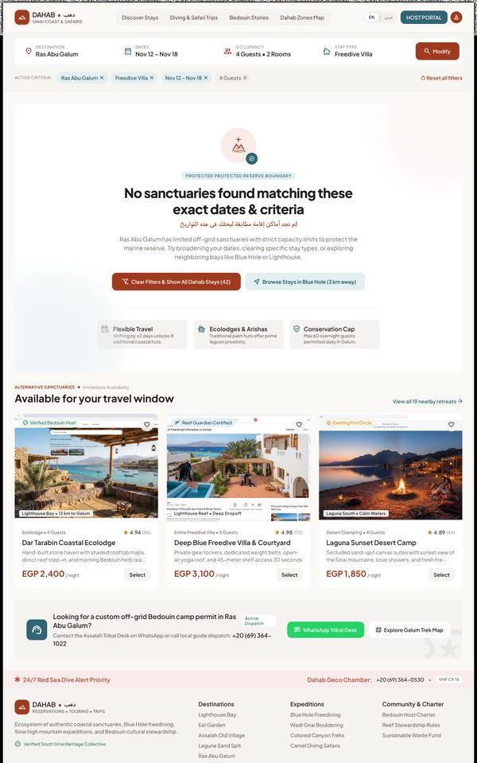
Open in Figma · 16:9934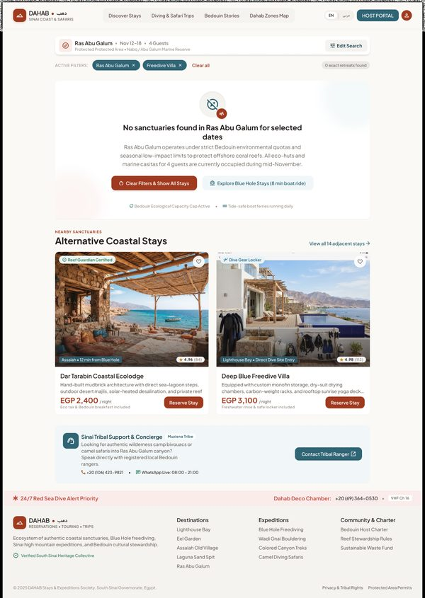
Open in Figma · 16:8314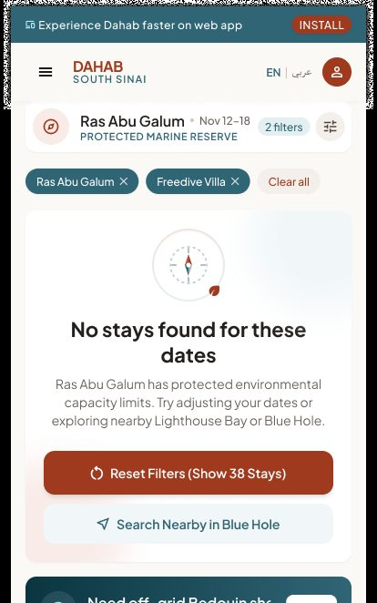
Open in Figma · 16:6907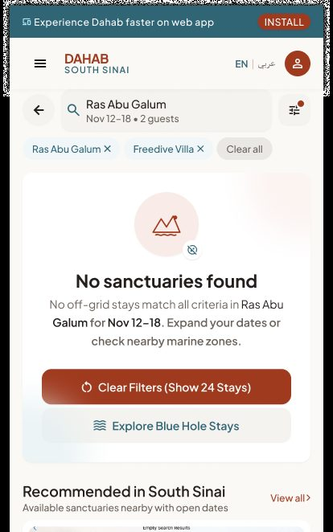
Open in Figma · 16:5421| Element | Behaviour / rule |
|---|---|
| Criteria bar (Destination · Dates · Occupancy · Stay type · Modify) + active-criteria chips + Reset all filters | Modify reopens the search inputs; chips can be removed one by one. |
| Message "No sanctuaries found matching these exact dates & criteria" (+ Arabic) and reason (e.g. Ras Abu Galum protected-area capacity limits) | Reason text depends on why results are empty (zone capacity, dates, filters). |
| Primary Clear Filters & Show All Dahab Stays (42) | Removes filters, keeps destination/dates. |
| Secondary Browse Stays in Blue Hole (3 km away) | Suggests nearest zone with availability. |
| Suggestion tiles: Flexible Travel ("Shifting by ±2 days unlocks 8 additional coastal huts"), Ecolodges & Arishas, Conservation Cap ("Max 60 overnight guests permitted daily in Galum") | Computed suggestions; ±2 days availability check. |
| "Alternative sanctuaries — Immediate availability" cards + "View all 19 nearby retreats" | Nearby listings available for the requested dates. |
| Concierge box: "WhatsApp Tribal Desk", "Explore Galum Trek Map", phone | Human help for off-grid stays. |
5. Cross-screen business rules
- Default zone on first visit = Lighthouse (design); remember last selected zone per device.
- "Popular in zone" ranking for new users = popularity (bookings/views) within zone (FR-11.2); personalised ranking is Phase 2 (FR-11.1).
- Prices shown in EGP "per night" including mandatory marine/conservation fees ("Taxes & Marine Fee Incl."); USD display is Later (FR-20.3).
- Only admin-approved, active listings appear (FR-13.3).
- Stories shown are published guide articles in the current language (FR-19.2); fall back to English if no translation (FR-2.7 is Later).
- Home feed must load in < 2 s on 4G (NFR-1) — conditions strip and stories may load after listings.
- Guide content previously loaded should be available offline (SRS §2.5 offline-tolerant).
6. Story candidates for Jira
Epic: GUEST-DISCOVERY — Discovery Home
| Key idea | Story | Acceptance criteria |
|---|---|---|
| DISC-1 | As a guest, I want a home page that shows Dahab's zones, popular stays and stories so I can start exploring. | Sections render in the Figma order on all 4 breakpoints; loads < 2 s on 4G; works logged-out. |
| DISC-2 | As a guest, I want to search by zone, type, dates and guests from the home page. | Submitting opens Search Results with criteria in the URL/state; empty dates allowed; guests default 2. |
| DISC-3 | As a guest, I want to switch zones and see what's popular there. | Tapping a zone sets it ACTIVE and refreshes "Popular in |
| DISC-4 | As a guest, I want to filter by category pill. | Pill filters the strip; "All Experiences" resets. |
| DISC-5 | As a guest, I want quick "curated focus" chips (Reef-front, Freedive buoy…). | Chip opens Search Results with that filter applied. |
| DISC-6 | As a guest, I want a filter panel (zone, price, type, stewardship, amenities, host culture). | Live result count; Clear all; Apply closes and shows chips; unapplied changes discarded on close. |
| DISC-7 | As a guest, I want helpful alternatives when nothing matches. | Empty state with reason, Clear filters (with count), nearest zone, ±2-day suggestion, available alternatives, concierge link. |
| DISC-8 | As a guest, I want to see today's sea conditions. | Strip shows water temp, wind, tide; hides gracefully if the data source fails. Needs data-source decision. |
| DISC-9 | As a guest, I want to read curated stories from the home page. | Cards open the article; "Read all stories" opens the stories list. |
| DISC-10 | As a guest, I want to save a listing from the home page. | Heart toggles saved state; logged-out → Login then save. |
7. Gaps, inconsistencies & open questions
| # | Finding | Suggested decision |
|---|---|---|
| G1 | Three different filter-panel designs on Native and Mobile Web, two on Tablet, one on Desktop — with different groups and price ranges. | Pick one filter model (groups, ranges, labels) and one layout per breakpoint; delete the rest in Figma. |
| G2 | Mobile Web filter variant B (16:7360) is almost identical to variant A but its text isn't live text layers (not editable/readable in Figma); Tablet variant A (16:8645) has overlapping garbled text next to "Reef Guardian Certified". | Keep one clean variant per breakpoint. |
| G3 | Live sea conditions, "Tide & wind sync (Optimal)" dates, "Coral Index", wind per zone — no data provider in SRS §5.3. | Choose a marine-weather API or admin-entered values; or drop for MVP. |
| G4 | The empty-results state lives in Discovery Home but is really a Search Results state. | Treat it as shared "No results" pattern for module 03. |
| G5 | Filter panel on Home duplicates the Search Results filter (module 03) with different groups. | One shared filter component for Home and Search. |
| G6 | Native Default frame shows the web PWA "INSTALL" banner. | Remove on native. |
| G7 | Guest selector label "2 Guests · Permit OK" — "Permit OK" meaning undefined. | Clarify or remove. |
| G8 | Counts disagree across breakpoints (42 / 38 / 24 stays; 18 in "See all"). | Use real data; note only. |
| G9 | Host tags like "Women-Led Sinai Collective", "Tribal Accord" need a data field on the listing/provider. | Add to listing attributes (Provider module) or drop. |
8. Out of scope for MVP (per SRS)
- Personalised recommendations from history (FR-11.1, Phase 2).
- Automatic translation fallback of content (FR-2.7, Later).
- Preferred-currency display (FR-20.3, Later).